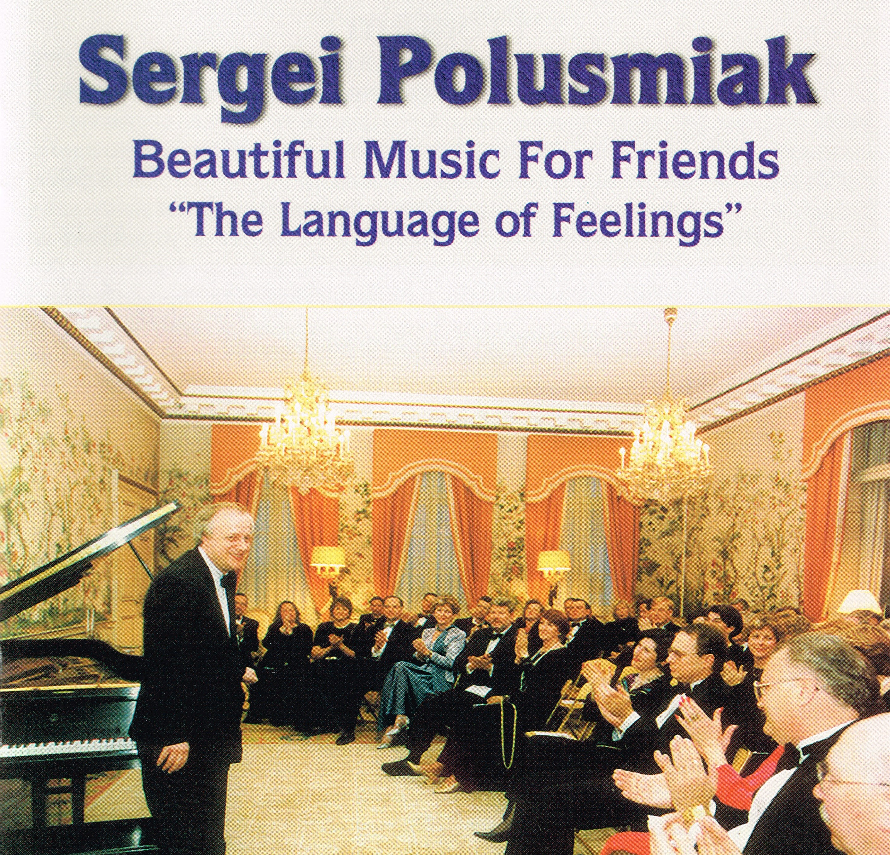
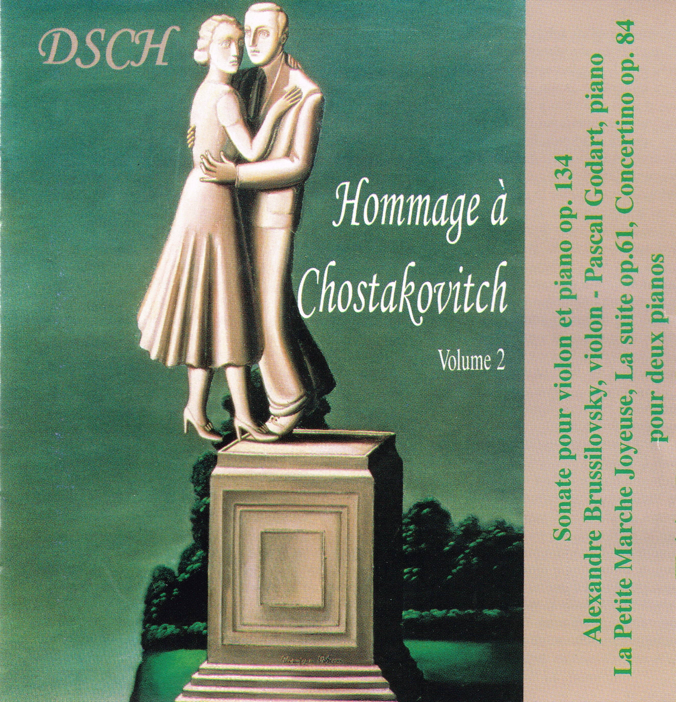
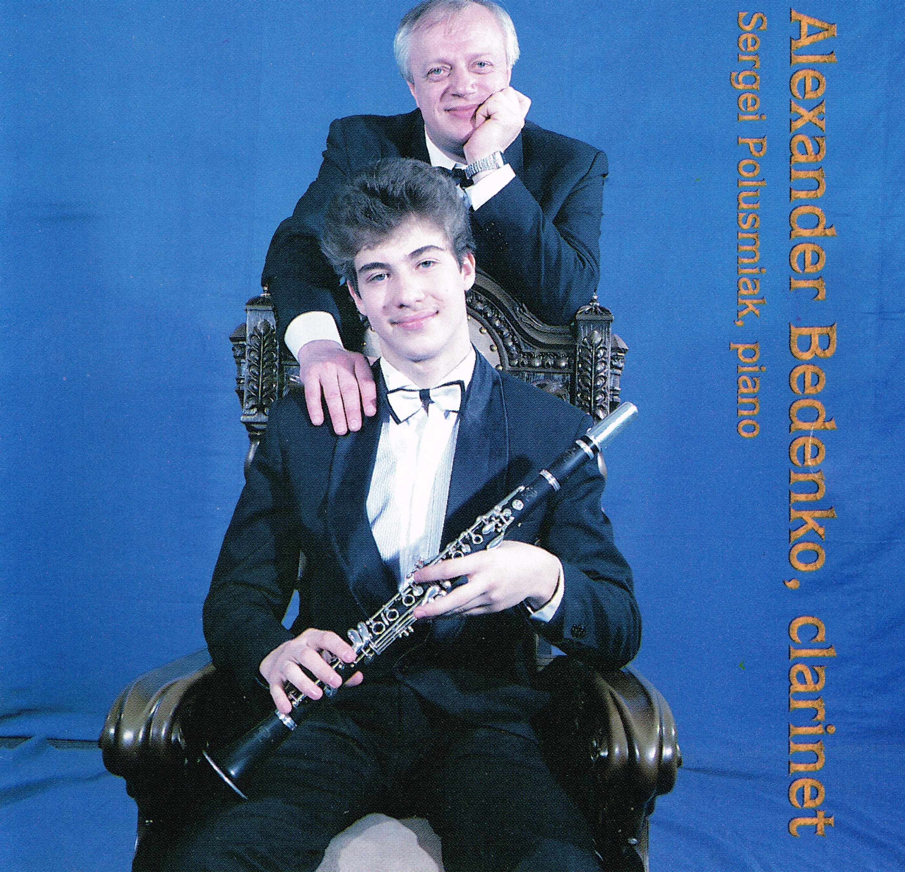
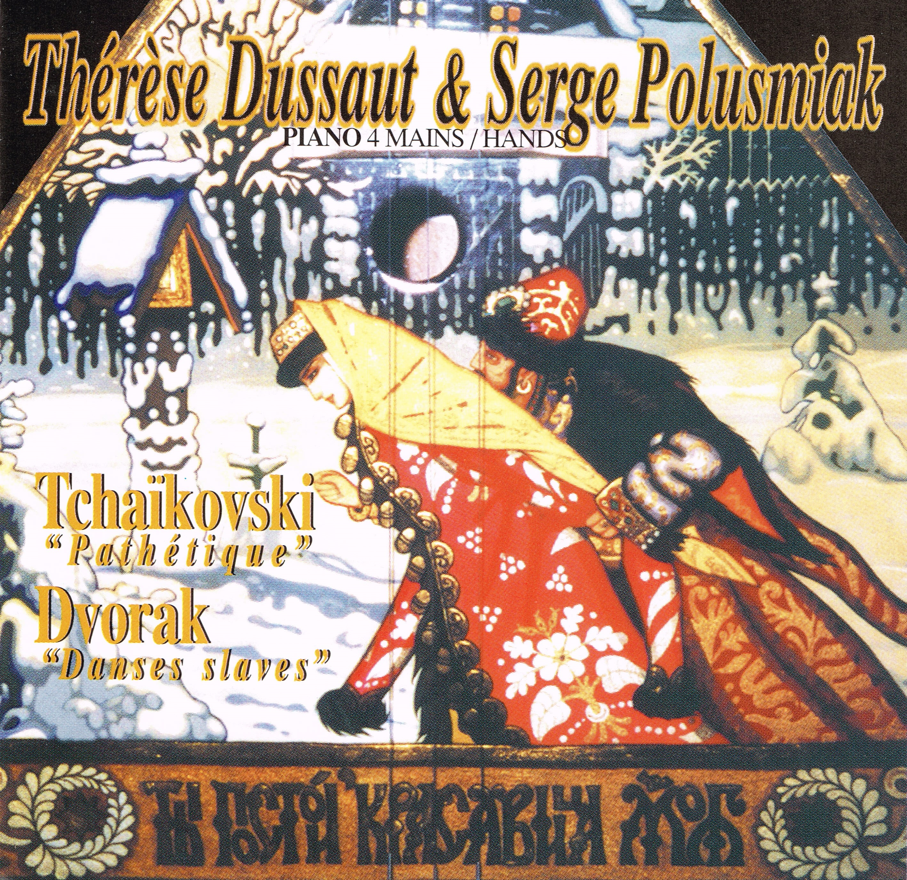

- Rachmaninoff - Etude in G Minor Opus 33 No 7
- Rachmaninoff - Etude in C Minor Opus 39 No 1
- Rachmaninoff - Prelude in D Major Opus 23 No 4
- Scriabin - 24 Preludes Opus 11
- Rachmaninoff - Prelude in G sharp Minor Opus 32 No 12
- Rachmaninoff - Etude in A Minor Opus 39 No 6
- Rachmaninoff - Prelude in G Major Opus 32 No 5
- Rachmaninoff - Sonata No 2 in B flat Minor Opus 36

- Bach/Busoni - Orgel-Choralvorspiele in F Minor “Ich ruf zu dir, Herr”
- Liszt - Consolation in D flat Major
- Mozart - Fantasia in C Major K 475
- Marcello/Bach - Adagio from the Concerto in D Minor
- Bach/Busoni - Orgel-Choralvorspiele in G Minor “Nun komm der Heiden Helland”
- Chopin - Nocturne in E Minor Opus 72 No 1
- Brahms - Three Intermezzi in E flat Major Opus 117 No 1
- Brahms - Three Intermezzi in B flat Minor Opus 117 No 2
- Brahms - Three Intermezzi in C sharp Minor Opus 117 No 3
- Tchaikovsky - Meditation Opus 72 No 5
- Rachmaninoff - Prelude in E flat Major Opus 23 No 6
- Rachmaninoff - Prelude in C sharp Minor Opus 3 No 2
- Vladimir Nalivaiko - Twinkling Stars

- Chostakovich - Sonate pour violon et piano opus 134 Andante
- Chostakovich - Sonate pour violon et piano opus 134 Allegretto
- Chostakovich - Sonate pour violon et piano opus 134 Largo - Andante – Largo
- Chostakovich - La Petite Marche Joyeuse pour 2 pianos
- Chostakovich - La suite opus 61 pour 2 pianos Prélude
- Chostakovich - La suite opus 61 pour 2 pianos Danse fantastique
- Chostakovich - La suite opus 61 pour 2 pianos Nocturne
- Chostakovich - La suite opus 61 pour 2 pianos Finale
- Chostakovich - Concertino opus 84 pour 2 pianos

- Brahms - Sonata for Clarinet and Piano in F Minor Opus 120 Allegro appasionato
- Brahms - Sonata for Clarinet and Piano in F Minor Opus 120 Andante un poco adagio
- Brahms - Sonata for Clarinet and Piano in F Minor Opus 120 Allegretto grazioso
- Brahms - Sonata for Clarinet and Piano in F Minor Opus 120 Vivace
- Saint-Saens - Sonata for Clarinet and Piano in E flat Major Opus 167 Allegretto
- Saint-Saens - Sonata for Clarinet and Piano in E flat Major Opus 167 Allegro animato
- Saint-Saens - Sonata for Clarinet and Piano in E flat Major Opus 167 Lento
- Saint-Saens - Sonata for Clarinet and Piano in E flat Major Opus 167 Molto allegro
- Poulenc - Sonata for Clarinet and Piano Allegro tristamente
- Poulenc - Sonata for Clarinet and Piano Romanza
- Poulenc - Sonata for Clarinet and Piano Allegro con fuoco
- Ravel - Piece en forme de Habanera
- Chopin - Nocturne in C sharp Minor Opus Posthumous
- Rimsky-Korsakov - Flight of the Bumblebee

- Tchaikovsky - Symphony No 6 in B Minor Opus 74 Adagio-Allegro non troppo
- Tchaikovsky - Symphony No 6 in B Minor Opus 74 Allegro com grazia
- Tchaikovsky - Symphony No 6 in B Minor Opus 74 Allegro molto vivace
- Tchaikovsky - Symphony No 6 in B Minor Opus 74 Finale. Adagio lamentoso
- Dvorak - Slavonic Dance in C Major Opus 46 No 1 Presto
- Dvorak - Slavonic Dance in F Major Opus 46 No 4 Tempo di Menuetto
- Dvorak - Slavonic Dance in A flat Major Opus 72 No 8 Presto